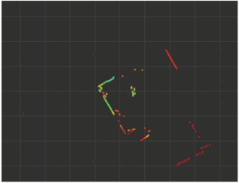

Project Linus

Teleoperation of Linus Robot
2D LIDAR Scans using Linus Robot
Linus Robot is an educational robotic platform in which the ROS software stack is scalable to larger robots.
Back View of Linus Robot